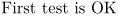
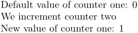

ConTeXt provides a higher layer of API to access various counters. For example, to set the page number to a certain value use \setcounter:
\setcounter[userpage][1]
Other useful commands for working with counters are
- \resetcounter
- \incrementcounter
- \decrementcounter
- \savecounter
- \restorecounter
- \rawcountervalue (not \getcounter)
- \setupheadnumber
Names of Commonly Used Counters
-
userpagefor visible pagenumbers -
pagefor internal pagenumbers -
formulafor formula numbers -
tablefor table numbers -
figurefor figure numbers
Testing the Value of a Counter
If you need to test the value of a counter, use \rawcountervalue (the is no \getcounter):
-
\definecounter [mynumber] [] \setcounter [mynumber] [42] \doifelse {\rawcountervalue[mynumber]} {42} {First test is OK} {Failed}
results in:
- 
Coupling Counters
Two counters can be coupled by
\definecounter[one] \definecounter[two][one]
For example
-
\definecounter[one] \definecounter[two][one] Default value of counter one: \rawcountervalue[one] We increment counter two \incrementcounter[two] New value of counter one: \rawcountervalue[one]
- 
By default counters are reset with each new chapter. To have a counter which isn’t reset you need way=bytext, and to remove the chapter number from the \getcounter result you have to add prefix=no.
Example definition:
\definecounter[examplecounter][way=bytext,prefix=no]